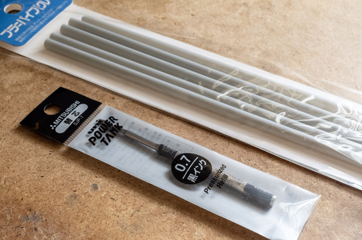
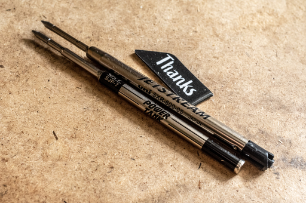
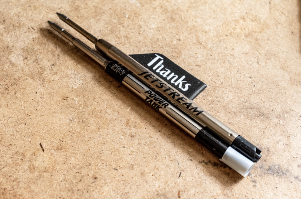
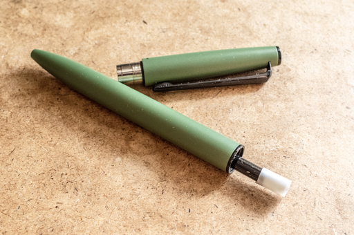
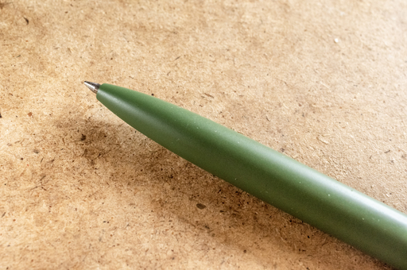

いきなりジェットストリームファンに喧嘩を売るようだが筆者はジェットストリームが嫌いだ。
たしかにあの書き味は魅力的だ。ただしちゃんとインクが出るならばという条件付きだ。よりにもよってやつはここぞという大事な場面で必ずインクが出なくなる。こいつは筆記者に喧嘩を売ってるのか！？とさえ思える。
思考の流れをたかがボールペンごときに邪魔されたくはない。かといって記録するという行為をやめるわけにはいかない。仕事に支障がでる。なのにジェットストリームは仕事の邪魔をする。許せない。
もちろんインクがでないといってもそれは一時的なものでメーカーホームページにある通り修正してやればまたインクがでるようになる。しかし一度ペン圧を受けて押しつぶされた紙の部分にはボールが滑って二度とインクが乗らなくなる。
なによりその修正に時間を要するのが許せない。思考の流れを分断されてイライラする。はっきり言ってジェットストリームは仕事に使えない。
そんなことをジェットストリーム PRIME を購入して使い始めてから日々思うようになった。
その点同じ三菱鉛筆が出しているパワータンクは仕事で使う際に非常に安定感、安心感がある。パワータンクはインクが出なくなることもまったくないし、かすれすらしない。
2017 年からジェットストリーム PRIME を買うまではパワータンクを使っているが、今まで上記のようなストレスにさらされたことがまったくない。
つい先日買ったばかりで机の上に「ワシを使え！！ジェットストリーム様だぞ！！」と鎮座しているジェットストリーム PRIME をじっと眺める。
こいつデザインとカラーリングは好みなんだよなぁ……でもインクがなぁ……このホルダーでパワータンクのリフィルが使えたらなぁ……
…………
…………
…………
……パワータンクのリフィルをカスタムすればいいんじゃね？

そんなわけでパワータンクのリフィルを G2 規格のジェットストリーム PRIME のホルダーで使えるようにプチカスタムするのに必要なものを買い揃えた。
買ったのはプラスチックのパイプとパワータンクの替え芯 SJP-7 だ。同じパワータンクの替え芯でエコノミーな SNP-7 や SNP-10 があるが、こちらは太くてジェットストリーム PRIME のホルダーには入らない。なので金属製の SJP-7 もしくは SJP-10 を使う。
今回はすこし細めの SJP-7 をチョイスした。

見ての通り G2 規格のジェットストリーム・リフィルとパワータンク・リフィルの先端付近の形状と長さが違う。
ネットで検索して同じことをやってる人がいないか調べたら、ちゃんといた。
その人のブログを読むとその人は先端側の形状の違いは G2 規格の使用済みプラリフィルから切り出して穴を広げて云々と面倒なカスタムをしている。
工具を揃えて面倒な加工はいちいちやってられんなぁと思っていたが、そのブログを読み進めるとボールペン用のバネを追加することで先端側パーツの作成を省略することも可能とあった。なのでバネ利用方式を採用することにした。
さらにリフィルの長さを調整するために、その人はフィッシャーのアダプターをカスタムしてパワータンクのリフィルに取り付けるってことをやっていた。
必要な道具はアダプターの穴を広げるためのドリル先と正確な穴位置が重要なので旋盤を使っている。
……旋盤だとっ！？そんなものは一般のご家庭にはないっ！！
ブログをよく読むと、その人はノック式のホルダーに入れるための改造を行っている。しかしジェットストリーム PRIME のホルダーはツイスト式だ。軸をひねるとホルダー内の台座がせり上がってリフィルをペン先に押し出す仕組みになっている。ならば後側のパーツは別にフィッシャーのパーツを流用して加工して……なんてしなくてもプラ棒を噛ませればいいんじゃね？と気がついた。

G2 規格の直径 5.7mmm のプラ棒なんて売られておらず、直径 5.5mm のプラパイプで代用することにした。

なんかいけそうな気がする。

いけた。これで勝つる！！